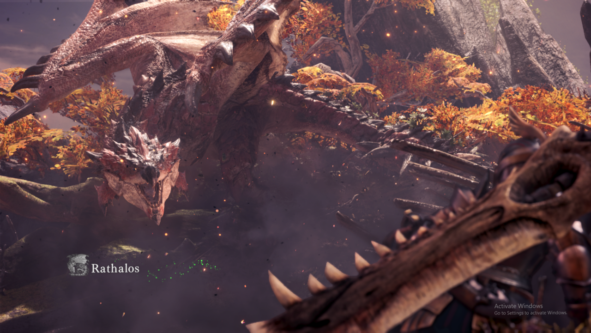
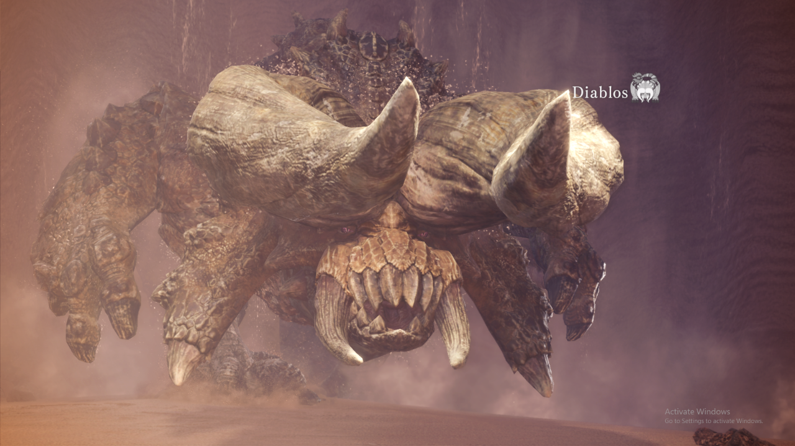
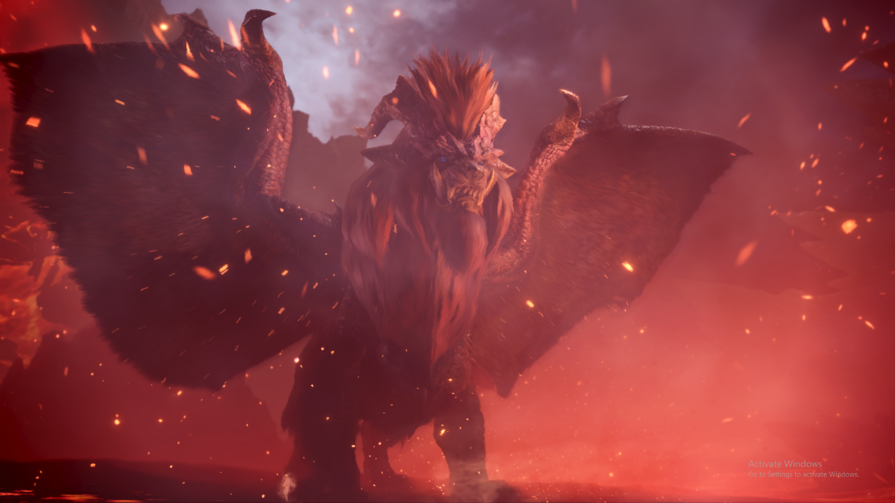
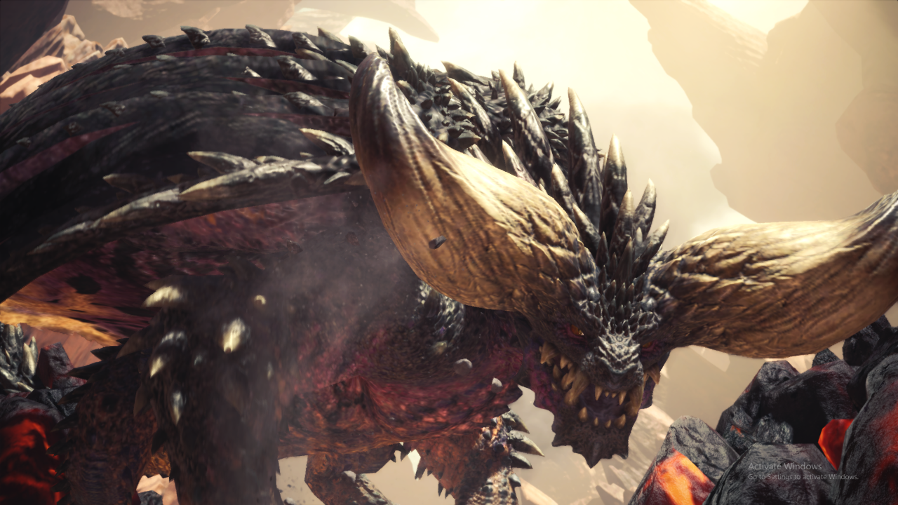
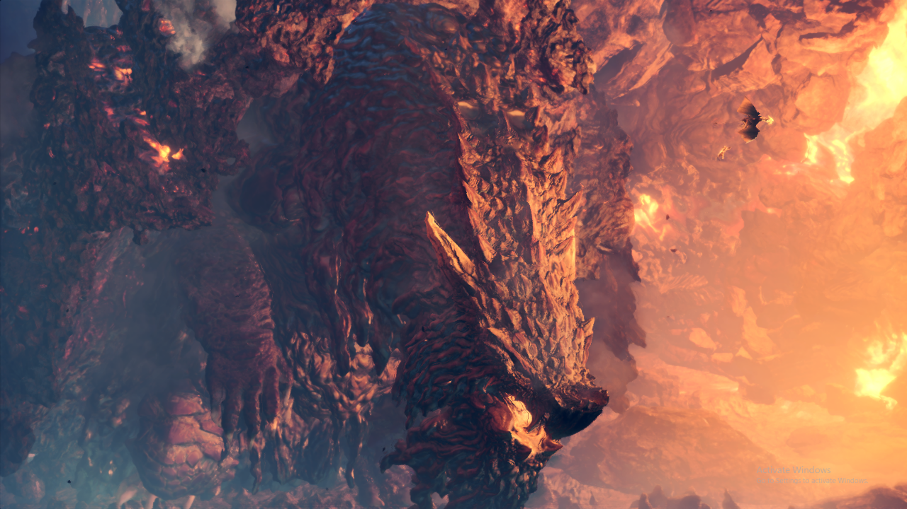
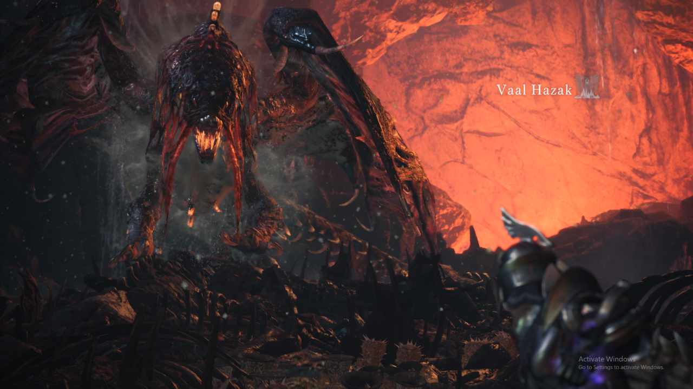

These are some few monsters in the game:

"King of the Sky" - Rathalos
Monster info:
- A flying fire wyvern that fires a ball of flame to attack
- It can inflict poison using its tail
- It has a thick hide that can dull weapons imediately
- Tip: If hunted using short range weapons, make sure to bring
flash bombs because it can be annoying to hunt when it
is flying

"Devil in the Desert" - Diablos
Monster info:
- A two-horned wyvern that can go under the ground
- Able to inflict a trumendous ammount of damage
using its horns - Attacks by charging at you on top or under the ground
- Tip: Bring sonic bombs when hunting this wyvern so whenever
it goes to the ground, it can be dazed but be wary
effect of sonic bombs are cancelled when the monster
is on frenzy mode

"Emperor of Flames" - Teostra
Monster info:
- An Elder Dragon that inflicts fire damage
- Able to breathe fire and emits ember around itself that causes burn damage
- Able to cast an explosion of flames within an area
- "Super Nova" Teostra's most powerful attack that creates an explosion around itself, a 1-hit kill for a hunter
- Tip: Fire resistant armour are preferable when hunting this dragon to prevent fireblight and reduce fire damage

"Elder Dragon Hunter" - Nergegante
Monster info:
- An Elder Dragon that hunts other Elder Dragon
- Covered in spikes that can be used as projectiles
- Spikes can regrow when angered and charge at an enemy when flying and on the ground
- Tip: If possible acquire mind's eye ability when hunting this monster to prevent attack defelct but if you don't have the ability use chargeblade for swift hunt

"Scorching Mountain Dragon" - Zora Magdaros
Monster info:
- An Elder Dragon so large that looks like a moving volcano
- It has a turtle like shell that protects its back and Spew fire and lava on its enemies
- It can only be repelled using cannons and dragonators but can be mounted to gather resource and damage weak points
- Tip: Make sure to use dragonator located on the ship at the bottom part of the wall and use cannons already loaded by other hunters and your palicoes

"Unknown Monster" - Xeno'jiiva
Monster info:
- The final boss of Monster Hunter World story mode
- It can fire beams of light or three short burst
- This monster can inflict dragonblight that increases the damage a hunter can sustain
- Its beam of light is so powerful that it can melt the ground
- Tip: Keep hitting the legs or tail until the opportunity comes where it fires a beam on the ground causing it to topple down

"Corpse Coat Dragon" - Vaal Hazak
Monster info:
- An Elder Dragon inhabits the deepest part of Rotten Vale and rests in piles of bones
- It coats itself with effluvium and able to use it to attack
- A large amount of effluvium can cause reduced attack and resilience and drains a large amount of health
- Tip: When hunting this monster make sure to bring nullberry to prevent hunter from effluvium poisoning